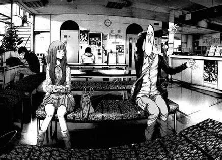

Bienvenido
Este blog está dedicado al manga Punpun. Aquí encontrarás información sobre sus tomos, sus diferentes representaciones y análisis de la obra.

Este blog está dedicado al manga Punpun. Aquí encontrarás información sobre sus tomos, sus diferentes representaciones y análisis de la obra.